CODING AGENTS AS PIXEL WORLD MODELS
traex/GPT-6.1-Sol · 0160
点击播放 · 原生 RGB 像素
逐轮保存的候选
回放视频、检查图与代码变化。
每份候选均可单独播放。实际图片检查记录在下方工具轨迹中。
候选 01播放与检查图
点击播放 · 原生 RGB 像素
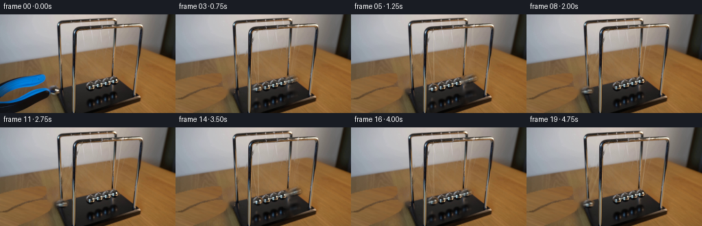
展开代码变化
--- 上一保存版本
+++ 本次保存版本
@@ -0,0 +1,170 @@
+from pathlib import Path
+import math
+import cv2
+import numpy as np
+from PIL import Image, ImageDraw, ImageFilter
+from scipy.ndimage import gaussian_filter, map_coordinates
+import artifact_io
+
+ROOT=Path(__file__).resolve().parent
+W,H=256,144
+im=np.array(Image.open(ROOT/'first_frame.png').convert('RGB'))
+S=4
+
+def polygon_mask(points,blur=0):
+ m=Image.new('L',(W*S,H*S));d=ImageDraw.Draw(m)
+ d.polygon([(round(x*S),round(y*S)) for x,y in points],fill=255)
+ if blur:m=m.filter(ImageFilter.GaussianBlur(blur*S))
+ return np.array(m.resize((W,H),Image.Resampling.LANCZOS))/255.
+
+def ellipse_mask(box,blur=0):
+ m=Image.new('L',(W*S,H*S));ImageDraw.Draw(m).ellipse(tuple(int(v*S) for v in box),fill=255)
+ if blur:m=m.filter(ImageFilter.GaussianBlur(blur*S))
+ return np.array(m.resize((W,H),Image.Resampling.LANCZOS))/255.
+
+upper=[(-3,100),(6,97),(14,95),(27,92),(44,89),(61,87),(65,88),(66,91),(66,95),(64,98),(60,101),(54,103),(38,106),(20,113),(9,119),(-3,122)]
+lower=[(-3,126),(10,126),(20,121),(37,113),(52,109),(63,107),(69,108),(72,111),(73,115),(71,120),(61,126),(45,134),(26,141),(19,146),(-3,146)]
+toolmask=np.maximum(polygon_mask(upper,.28),polygon_mask(lower,.28))
+# An exposed region of the same tabletop supplies continuous, softly focused wood.
+y,x=np.mgrid[0:H,0:W].astype(float)
+sourcex=214+.48*x
+sourcey=y
+wood=np.stack([map_coordinates(im[...,c].astype(float),[sourcey,sourcex],order=1,mode='nearest') for c in range(3)],-1)
+# Fit the left-hand tabletop's natural warm illumination to the sampled texture.
+# These small adjustments reproduce the table's cooler, shadowed left side.
+wood[:,:,0]-=19-0.10*x
+wood[:,:,1]-=6-0.02*x
+wood[:,:,2]+=8-.02*x
+wood=np.clip(wood,0,255)
+# Feather within an expanded mask, keeping all unchanged wall/table pixels fixed.
+expanded=cv2.dilate((toolmask>.025).astype(np.uint8),np.ones((3,3),np.uint8)).astype(float)
+expanded=gaussian_filter(expanded,.6)
+base=im.astype(float)*(1-expanded[...,None])+wood*expanded[...,None]
+# Locally restore the small regions concealed by the released sphere, the far sphere,
+# and the far sphere's reflection, with edge-aware photographic interpolation.
+mask=np.zeros((H,W),np.uint8)
+cv2.ellipse(mask,(78,110),(10,9),0,0,360,255,-1)
+mask[:,86:]=0
+cv2.ellipse(mask,(167,96),(8,8),0,0,360,255,-1)
+cv2.ellipse(mask,(166,119),(9,11),0,0,360,255,-1)
+# Old moving suspension threads: only the slender nylon, not the metal rails.
+thread=np.zeros_like(mask)
+for a,b in [((104,12),(78,104)),((120,22),(78,104)),((157,10),(167,91)),((177,19),(167,91))]:
+ cv2.line(thread,a,b,255,1,cv2.LINE_AA)
+# protect the uprights and the top frame from interpolation
+thread[:23]=0
+thread[:,84:91]=0
+thread[:,105:111]=0
+thread[:,163:170]=0
+mask=np.maximum(mask,thread)
+base=cv2.inpaint(np.uint8(np.clip(base,0,255)),mask,4,cv2.INPAINT_TELEA).astype(float)
+Image.fromarray(np.uint8(base)).save(ROOT/'.tmp/clean.png')
+
+# Keep the three inner masses, stationary nylon and original specular textures.
+# Original photographic chrome sprites avoid schematic, plastic-looking spheres.
+cy,cx=96.1,166.85
+Y,X=np.mgrid[0:H,0:W]
+r=np.sqrt(((X-cx)/6.9)**2+((Y-cy)/6.5)**2)
+sprite_alpha=np.clip((1.08-r)*5,0,1)
+# small collar connecting the sphere to its two threads
+sprite_alpha=np.maximum(sprite_alpha,ellipse_mask((163.9,88.9,168.1,93.5),.2))
+# Extract as a premultiplied high-resolution image.
+rgba=np.dstack([im.astype(float)*sprite_alpha[...,None],sprite_alpha*255]).astype(np.float32)
+left0=np.array([120.0,107.25]);right0=np.array([166.85,96.1])
+leftpivot=[(104,11.0),(120.4,20.4)]
+rightpivot=[(157.0,8.5),(177.5,17.0)]
+# Occlusion: front upright stands between camera and swinging masses.
+frontmask=polygon_mask([(106.4,29),(110.7,28),(110.0,142),(105.7,145)],.2)
+# The sloping right front upright likewise passes in front of the pendulum.
+frontmask=np.maximum(frontmask,polygon_mask([(203.0,24),(207.6,24),(199.2,119.2),(194.8,120.2)],.3))
+frontmask[:26]=0
+basepoly=polygon_mask([(87,110),(166,90),(202,118),(113,151)],.5)
+# Reflection texture clipped to the polished black plinth.
+reflection=np.zeros((H,W,4),np.float32)
+ra=ellipse_mask((158,108,175,131),1.1)
+reflection[...,:3]=im*ra[...,None]
+reflection[...,3]=ra*255
+
+
+def pos(theta,left):
+ rest=left0 if left else right0
+ v=np.array([8.2,91.55]) if left else np.array([-.4,83.8])
+ h=np.array([98.0,-27.3])
+ return rest+h*math.sin(theta)+v*(math.cos(theta)-1)
+
+def warp_texture(tex, center, scale=(1,1)):
+ sx,sy=scale
+ M=np.array([[sx,0,center[0]-sx*cx],[0,sy,center[1]-sy*cy]],np.float32)
+ a=cv2.warpAffine(tex,M,(W,H),flags=cv2.INTER_LINEAR,borderMode=cv2.BORDER_CONSTANT)
+ return a[...,:3],a[...,3:4]/255
+
+def composite(dst,col,a):return dst*(1-a)+col
+
+
+def threads(dst,center,pivots):
+ # Translucent fine nylon has a light edge and a weak darker centre.
+ lay=Image.new('RGBA',(W*S,H*S));d=ImageDraw.Draw(lay)
+ for k,p in enumerate(pivots):
+ end=(center[0]+(-1.1 if k==0 else .8),center[1]-5.3)
+ d.line((p[0]*S,p[1]*S,end[0]*S,end[1]*S),fill=(231,224,202,68 if k==0 else 112),width=2)
+ ar=np.array(lay.resize((W,H),Image.Resampling.LANCZOS)).astype(float)
+ a=ar[...,3:4]/255
+ return dst*(1-a)+ar[...,:3]*a
+
+
+def addreflection(dst,theta,left):
+ # Mirror image on the base tracks horizontal displacement but reverses height.
+ rest=left0 if left else right0
+ v=np.array([8.2,91.55]) if left else np.array([-.4,83.8])
+ r0=np.array([rest[0]-.5,rest[1]+(26 if left else 23)])
+ p=r0+np.array([98,-27.3])*math.sin(theta)-v*(math.cos(theta)-1)
+ # simple blurred chrome reflected onto black; with decreasing brightness aloft
+ dist=abs(math.sin(theta))
+ shift=(p[0]-166,p[1]-119)
+ M=np.float32([[1,0,shift[0]],[0,1,shift[1]]])
+ a=cv2.warpAffine(reflection,M,(W,H),flags=cv2.INTER_LINEAR)
+ al=a[...,3:4]/255*basepoly[...,None]*(.86-.25*dist)
+ rgb=np.divide(a[...,:3],a[...,3:4]/255+1e-6)
+ dst=dst*(1-al)+rgb*al
+ return dst
+
+
+def scene(t):
+ release=.065
+ # Contact exchanges momentum; only an end ball leaves the central cluster.
+ phase=2*math.pi*max(0,t-release)/.925
+ amplitude=.426*math.exp(-.057*max(0,t-release))
+ q=-amplitude*math.cos(phase)
+ lt=min(q,0);rt=max(q,0)
+ lc=pos(lt,True);rc=pos(rt,False)
+ dst=base.copy()
+ dst=addreflection(dst,lt,True)
+ dst=addreflection(dst,rt,False)
+ dst=threads(dst,lc,leftpivot)
+ dst=threads(dst,rc,rightpivot)
+ # Add sphere and collar at their projected physical pendulum positions.
+ for center,left in [(rc,False),(lc,True)]:
+ scale=(1,1) if not left else (1.09,1.04)
+ col,a=warp_texture(rgba,center,scale)
+ dst=composite(dst,col,a)
+ # Replace the foreground frame's chrome wherever it hides the moving parts.
+ dst=dst*(1-frontmask[...,None])+im*frontmask[...,None]
+ # The released grabber is pulled naturally out of shot to the left.
+ if t<.9:
+ u=max(0,t-.025)
+ dx=-104*min(1,u/.78)
+ dy=8*min(1,u/.78)
+ M=np.float32([[1,0,dx],[0,1,dy]])
+ al=cv2.warpAffine(toolmask.astype(np.float32),M,(W,H),flags=cv2.INTER_LINEAR)[...,None]
+ color=cv2.warpAffine((im*toolmask[...,None]).astype(np.float32),M,(W,H),flags=cv2.INTER_LINEAR)
+ dst=composite(dst,color,al)
+ return np.clip(dst,0,255)
+
+frames=[im.copy()]
+# Short exposure gives a restrained photographic blur, not slow motion.
+for i in range(1,20):
+ t=i/4
+ samples=[scene(t+dt) for dt in np.linspace(-.018,.018,5)]
+ frames.append(np.uint8(np.clip(np.mean(samples,axis=0),0,255)))
+frames=np.stack(frames).astype(np.uint8)
+artifact_io.save(frames,ROOT)
候选 02播放与检查图
点击播放 · 原生 RGB 像素

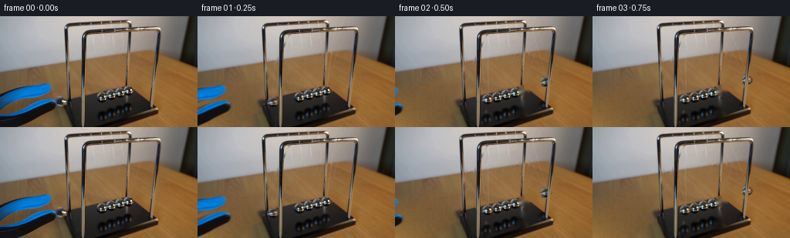
展开代码变化
--- 上一保存版本
+++ 本次保存版本
@@ -22,24 +22,29 @@
if blur:m=m.filter(ImageFilter.GaussianBlur(blur*S))
return np.array(m.resize((W,H),Image.Resampling.LANCZOS))/255.
-upper=[(-3,100),(6,97),(14,95),(27,92),(44,89),(61,87),(65,88),(66,91),(66,95),(64,98),(60,101),(54,103),(38,106),(20,113),(9,119),(-3,122)]
-lower=[(-3,126),(10,126),(20,121),(37,113),(52,109),(63,107),(69,108),(72,111),(73,115),(71,120),(61,126),(45,134),(26,141),(19,146),(-3,146)]
-toolmask=np.maximum(polygon_mask(upper,.28),polygon_mask(lower,.28))
-# An exposed region of the same tabletop supplies continuous, softly focused wood.
+upper=[(-3,99),(6,96),(14,94),(27,91),(44,88),(62,86.7),(66,88),(67,91),(67,95),(65,99),(60,103),(53,105),(38,107),(20,114),(9,120),(-3,123)]
+lower=[(-3,126),(10,126),(20,121),(37,113),(52,109),(63,107),(69,108),(73,111),(74,115),(71,120),(61,126),(45,134),(26,142),(19,146),(-3,146)]
+toolmask=np.maximum(polygon_mask(upper,.35),polygon_mask(lower,.35))
+# Continuous photographic tabletop reconstructed across the occluded area.
+# A broad feather avoids leaving any outline of the removed grabber.
+removal=np.maximum(polygon_mask([(-3,96),(15,92),(42,86),(64,84),(69,86),(70,98),(61,107),(77,103),(81,112),(75,125),(48,139),(28,146),(-3,146)]),ellipse_mask((68,101,86,120)))
y,x=np.mgrid[0:H,0:W].astype(float)
-sourcex=214+.48*x
-sourcey=y
-wood=np.stack([map_coordinates(im[...,c].astype(float),[sourcey,sourcex],order=1,mode='nearest') for c in range(3)],-1)
-# Fit the left-hand tabletop's natural warm illumination to the sampled texture.
-# These small adjustments reproduce the table's cooler, shadowed left side.
-wood[:,:,0]-=19-0.10*x
-wood[:,:,1]-=6-0.02*x
-wood[:,:,2]+=8-.02*x
-wood=np.clip(wood,0,255)
-# Feather within an expanded mask, keeping all unchanged wall/table pixels fixed.
-expanded=cv2.dilate((toolmask>.025).astype(np.uint8),np.ones((3,3),np.uint8)).astype(float)
-expanded=gaussian_filter(expanded,.6)
-base=im.astype(float)*(1-expanded[...,None])+wood*expanded[...,None]
+f=np.stack([np.ones_like(x),x/80,(y-100)/40,(x/80)**2,((y-100)/40)**2,(x/80)*(y-100)/40],-1)
+valid=(x<83)&(y>74-.18*x)&(removal<.01)&(np.min(im,axis=-1)>50)
+coef=np.linalg.lstsq(f[valid],im[valid],rcond=None)[0]
+poly=f@coef
+# A subtle grain sampled from the uncovered wood above the grabber.
+photo=im.astype(float)
+resid=photo-gaussian_filter(photo,(2.8,2.8,0))
+sy=74+np.mod((y-74)*.9+x*.12,11)
+sx=np.mod(x+np.floor((y-74)/12)*17,74)
+texture=np.stack([map_coordinates(resid[...,c],[sy,sx],order=1,mode='reflect') for c in range(3)],-1)
+poly+=texture*.65
+m=(removal>.01).astype('uint8')*255
+repaired=cv2.inpaint(im,m,5,cv2.INPAINT_TELEA).astype(float)
+blend=np.clip(gaussian_filter((removal>.01).astype(float),5)*1.6,0,1)
+blend*=((x<84)&(y>71-.18*x))
+base=repaired*(1-blend[...,None])+np.clip(poly,0,255)*blend[...,None]
# Locally restore the small regions concealed by the released sphere, the far sphere,
# and the far sphere's reflection, with edge-aware photographic interpolation.
mask=np.zeros((H,W),np.uint8)
@@ -106,7 +111,7 @@
lay=Image.new('RGBA',(W*S,H*S));d=ImageDraw.Draw(lay)
for k,p in enumerate(pivots):
end=(center[0]+(-1.1 if k==0 else .8),center[1]-5.3)
- d.line((p[0]*S,p[1]*S,end[0]*S,end[1]*S),fill=(231,224,202,68 if k==0 else 112),width=2)
+ d.line((p[0]*S,p[1]*S,end[0]*S,end[1]*S),fill=(231,224,202,38 if k==0 else 58),width=2)
ar=np.array(lay.resize((W,H),Image.Resampling.LANCZOS)).astype(float)
a=ar[...,3:4]/255
return dst*(1-a)+ar[...,:3]*a
@@ -132,7 +137,7 @@
def scene(t):
release=.065
# Contact exchanges momentum; only an end ball leaves the central cluster.
- phase=2*math.pi*max(0,t-release)/.925
+ phase=2*math.pi*max(0,t-release)/1.16
amplitude=.426*math.exp(-.057*max(0,t-release))
q=-amplitude*math.cos(phase)
lt=min(q,0);rt=max(q,0)
@@ -164,7 +169,7 @@
# Short exposure gives a restrained photographic blur, not slow motion.
for i in range(1,20):
t=i/4
- samples=[scene(t+dt) for dt in np.linspace(-.018,.018,5)]
+ samples=[scene(t+dt) for dt in np.linspace(-.008,.008,5)]
frames.append(np.uint8(np.clip(np.mean(samples,axis=0),0,255)))
frames=np.stack(frames).astype(np.uint8)
artifact_io.save(frames,ROOT)
候选 03播放与检查图
点击播放 · 原生 RGB 像素

展开代码变化
--- 上一保存版本
+++ 本次保存版本
@@ -36,13 +36,13 @@
# A subtle grain sampled from the uncovered wood above the grabber.
photo=im.astype(float)
resid=photo-gaussian_filter(photo,(2.8,2.8,0))
-sy=74+np.mod((y-74)*.9+x*.12,11)
-sx=np.mod(x+np.floor((y-74)/12)*17,74)
+sy=76+y*.052+x*.033
+sx=5+x*.72
texture=np.stack([map_coordinates(resid[...,c],[sy,sx],order=1,mode='reflect') for c in range(3)],-1)
-poly+=texture*.65
+poly+=texture*.45
m=(removal>.01).astype('uint8')*255
repaired=cv2.inpaint(im,m,5,cv2.INPAINT_TELEA).astype(float)
-blend=np.clip(gaussian_filter((removal>.01).astype(float),5)*1.6,0,1)
+blend=np.clip(gaussian_filter((removal>.01).astype(float),8)*1.8,0,1)
blend*=((x<84)&(y>71-.18*x))
base=repaired*(1-blend[...,None])+np.clip(poly,0,255)*blend[...,None]
# Locally restore the small regions concealed by the released sphere, the far sphere,
@@ -63,6 +63,21 @@
thread[:,163:170]=0
mask=np.maximum(mask,thread)
base=cv2.inpaint(np.uint8(np.clip(base,0,255)),mask,4,cv2.INPAINT_TELEA).astype(float)
+# The moving far end reveals a sharp wood-to-black-base edge behind it.
+far=ellipse_mask((158.8,87.6,176.9,104.3),.7)
+# Build both materials from the nearby uncovered surfaces, preserving the edge.
+edge=np.where(x<=164,110-(x-87)*20/77,90+(x-164)*28/38)
+inside=1/(1+np.exp(np.clip(-(y-edge)*3,-80,80)))
+woodlocal=np.stack([map_coordinates(im[...,c].astype(float),[y-9,x+10],order=1,mode='nearest') for c in range(3)],-1)
+blacklocal=np.stack([map_coordinates(im[...,c].astype(float),[y+9,x+5],order=1,mode='nearest') for c in range(3)],-1)
+blacklocal=gaussian_filter(blacklocal,(1.3,1.3,0))
+fill=woodlocal*(1-inside[...,None])+blacklocal*inside[...,None]
+base=base*(1-far[...,None])+fill*far[...,None]
+# Rear leg down to its foot on the base, formerly partly hidden by the far mass.
+for yy in range(88,95):
+ shift=(yy-88)*-.10
+ for xx in range(162,169):
+ base[yy,xx]=map_coordinates(im[...,0].astype(float),[[85],[xx-shift]],order=1)[0],map_coordinates(im[...,1].astype(float),[[85],[xx-shift]],order=1)[0],map_coordinates(im[...,2].astype(float),[[85],[xx-shift]],order=1)[0]
Image.fromarray(np.uint8(base)).save(ROOT/'.tmp/clean.png')
# Keep the three inner masses, stationary nylon and original specular textures.
候选 04播放与检查图
可观测工具轨迹
实际执行的命令与返回图片。
命令 1exit 0
/bin/bash -lc "ls -la && cat prompt.txt && printf '\\n---RULES---\\n' && cat GENERATION_RULES.md"
命令 2exit 0
/bin/bash -lc "cat artifact_io.py && python - <<'PY'
from PIL import Image
im=Image.open('first_frame.png');print(im.size);im.resize((1024,576)).save('.tmp/enlarged.png')
PY"命令 3exit 0
/bin/bash -lc "python - <<'PY'
from PIL import Image
im=Image.open('first_frame.png');im.crop((55,5,177,118)).resize((854,791)).save('.tmp/detail.png')
import importlib.util
for s in ['cv2','scipy','numpy']:print(s,bool(importlib.util.find_spec(s)))
PY"命令 4exit 0
/bin/bash -lc "python - <<'PY'
from PIL import Image
im=Image.open('first_frame.png');im.crop((115,85,181,115)).resize((1056,480)).save('.tmp/balls.png')
PY"命令 5exit 0
/bin/bash -lc "python - <<'PY'
from PIL import Image,ImageDraw
im=Image.open('first_frame.png').resize((1280,720))
d=ImageDraw.Draw(im)
for x in range(0,256,10):
d.line((x*5,0,x*5,720),fill=(255,0,0,70),width=1);d.text((x*5,0),str(x),fill=(255,0,0))
for y in range(0,144,10):
d.line((0,y*5,1280,y*5),fill=(255,0,0),width=1);d.text((0,y*5),str(y),fill=(255,0,0))
im.save('.tmp/grid.png')
PY"命令 6exit 0
/bin/bash -lc "python - <<'PY'
from PIL import Image,ImageEnhance,ImageFilter
im=Image.open('first_frame.png');im=ImageEnhance.Contrast(im).enhance(1.5);im=ImageEnhance.Sharpness(im).enhance(3);im.resize((1024,576)).save('.tmp/sharp.png')
PY"命令 7exit 0
/bin/bash -lc "python - <<'PY'
from PIL import Image,ImageDraw
im=Image.open('first_frame.png');p=im.crop((121,85,178,113)).resize((1140,560),Image.Resampling.NEAREST);d=ImageDraw.Draw(p)
for x in range(121,179):
if x%2==0:d.line(((x-121)*20,0,(x-121)*20,560),fill='red',width=1);d.text(((x-121)*20,0),str(x),fill='red')
for y in range(85,114):
if y%2:d.line((0,(y-85)*20,1140,(y-85)*20),fill='red',width=1);d.text((0,(y-85)*20),str(y),fill='red')
p.save('.tmp/ballgrid.png')
PY"命令 8exit 0
/bin/bash -lc "python - <<'PY'
from PIL import Image,ImageEnhance
im=Image.open('first_frame.png').crop((73,12,128,107));ImageEnhance.Contrast(im).enhance(2).resize((550,950)).save('.tmp/string.png')
PY"命令 9exit 0
/bin/bash -lc "cat > generate.py <<'PY'
from pathlib import Path
import math
import cv2
import numpy as np
from PIL import Image, ImageDraw, ImageFilter
from scipy.ndimage import gaussian_filter, map_coordinates
import artifact_io
ROOT=Path(__file__).resolve().parent
W,H=256,144
im=np.array(Image.open(ROOT/'first_frame.png').convert('RGB'))
S=4
def polygon_mask(points,blur=0):
m=Image.new('L',(W*S,H*S));d=ImageDraw.Draw(m)
d.polygon([(round(x*S),round(y*S)) for x,y in points],fill=255)
if blur:m=m.filter(ImageFilter.GaussianBlur(blur*S))
return np.array(m.resize((W,H),Image.Resampling.LANCZOS))/255.
def ellipse_mask(box,blur=0):
m=Image.new('L',(W*S,H*S));ImageDraw.Draw(m).ellipse(tuple(int(v*S) for v in box),fill=255)
if blur:m=m.filter(ImageFilter.GaussianBlur(blur*S))
return np.array(m.resize((W,H),Image.Resampling.LANCZOS))/255.
upper=[(-3,100),(6,97),(14,95),(27,92),(44,89),(61,87),(65,88),(66,91),(66,95),(64,98),(60,101),(54,103),(38,106),(20,113),(9,119),(-3,122)]
lower=[(-3,126),(10,126),(20,121),(37,113),(52,109),(63,107),(69,108),(72,111),(73,115),(71,120),(61,126),(45,134),(26,141),(19,146),(-3,146)]
toolmask=np.maximum(polygon_mask(upper,.28),polygon_mask(lower,.28))
# An exposed region of the same tabletop supplies continuous, softly focused wood.
y,x=np.mgrid[0:H,0:W].astype(float)
sourcex=214+.48*x
sourcey=y
wood=np.stack([map_coordinates(im[...,c].astype(float),[sourcey,sourcex],order=1,mode='nearest') for c in range(3)],-1)
# Fit the left-hand tabletop's natural warm illumination to the sampled texture.
# These small adjustments reproduce the table's cooler, shadowed left side.
wood[:,:,0]-=19-0.10*x
wood[:,:,1]-=6-0.02*x
wood[:,:,2]+=8-.02*x
wood=np.clip(wood,0,255)
# Feather within an expanded mask, keeping all unchanged wall/table pixels fixed.
expanded=cv2.dilate((toolmask>.025).astype(np.uint8),np.ones((3,3),np.uint8)).astype(float)
expanded=gaussian_filter(expanded,.6)
base=im.astype(float)*(1-expanded[...,None])+wood*expanded[...,None]
# Locally restore the small regions concealed by the released sphere, the far sphere,
# and the far sphere's reflection, with edge-aware photographic interpolation.
mask=np.zeros((H,W),np.uint8)
cv2.ellipse(mask,(78,110),(10,9),0,0,360,255,-1)
mask[:,86:]=0
cv2.ellipse(mask,(167,96),(8,8),0,0,360,255,-1)
cv2.ellipse(mask,(166,119),(9,11),0,0,360,255,-1)
# Old moving suspension threads: only the slender nylon, not the metal rails.
thread=np.zeros_like(mask)
for a,b in [((104,12),(78,104)),((120,22),(78,104)),((157,10),(167,91)),((177,19),(167,91))]:
cv2.line(thread,a,b,255,1,cv2.LINE_AA)
# protect the uprights and the top frame from interpolation
thread[:23]=0
thread[:,84:91]=0
thread[:,105:111]=0
thread[:,163:170]=0
mask=np.maximum(mask,thread)
base=cv2.inpaint(np.uint8(np.clip(base,0,255)),mask,4,cv2.INPAINT_TELEA).astype(float)
Image.fromarray(np.uint8(base)).save(ROOT/'.tmp/clean.png')
# Keep the three inner masses, stationary nylon and original specular textures.
# Original photographic chrome sprites avoid schematic, plastic-looking spheres.
cy,cx=96.1,166.85
Y,X=np.mgrid[0:H,0:W]
r=np.sqrt(((X-cx)/6.9)**2+((Y-cy)/6.5)**2)
sprite_alpha=np.clip((1.08-r)*5,0,1)
# small collar connecting the sphere to its two threads
sprite_alpha=np.maximum(sprite_alpha,ellipse_mask((163.9,88.9,168.1,93.5),.2))
# Extract as a premultiplied high-resolution image.
rgba=np.dstack([im.astype(float)*sprite_alpha[...,None],sprite_alpha*255]).astype(np.float32)
left0=np.array([120.0,107.25]);right0=np.array([166.85,96.1])
leftpivot=[(104,11.0),(120.4,20.4)]
rightpivot=[(157.0,8.5),(177.5,17.0)]
# Occlusion: front upright stands between camera and swinging masses.
frontmask=polygon_mask([(106.4,29),(110.7,28),(110.0,142),(105.7,145)],.2)
# The sloping right front upright likewise passes in front of the pendulum.
frontmask=np.maximum(frontmask,polygon_mask([(203.0,24),(207.6,24),(199.2,119.2),(194.8,120.2)],.3))
frontmask[:26]=0
basepoly=polygon_mask([(87,110),(166,90),(202,118),(113,151)],.5)
# Reflection texture clipped to the polished black plinth.
reflection=np.zeros((H,W,4),np.float32)
ra=ellipse_mask((158,108,175,131),1.1)
reflection[...,:3]=im*ra[...,None]
reflection[...,3]=ra*255
def pos(theta,left):
rest=left0 if left else right0
v=np.array([8.2,91.55]) if left else np.array([-.4,83.8])
h=np.array([98.0,-27.3])
return rest+h*math.sin(theta)+v*(math.cos(theta)-1)
def warp_texture(tex, center, scale=(1,1)):
sx,sy=scale
M=np.array([[sx,0,center[0]-sx*cx],[0,sy,center[1]-sy*cy]],np.float32)
a=cv2.warpAffine(tex,M,(W,H),flags=cv2.INTER_LINEAR,borderMode=cv2.BORDER_CONSTANT)
return a[...,:3],a[...,3:4]/255
def composite(dst,col,a):return dst*(1-a)+col
def threads(dst,center,pivots):
# Translucent fine nylon has a light edge and a weak darker centre.
lay=Image.new('RGBA',(W*S,H*S));d=ImageDraw.Draw(lay)
for k,p in enumerate(pivots):
end=(center[0]+(-1.1 if k==0 else .8),center[1]-5.3)
d.line((p[0]*S,p[1]*S,end[0]*S,end[1]*S),fill=(231,224,202,68 if k==0 else 112),width=2)
ar=np.array(lay.resize((W,H),Image.Resampling.LANCZOS)).astype(float)
a=ar[...,3:4]/255
return dst*(1-a)+ar[...,:3]*a
def addreflection(dst,theta,left):
# Mirror image on the base tracks horizontal displacement but reverses height.
rest=left0 if left else right0
v=np.array([8.2,91.55]) if left else np.array([-.4,83.8])
r0=np.array([rest[0]-.5,rest[1]+(26 if left else 23)])
p=r0+np.array([98,-27.3])*math.sin(theta)-v*(math.cos(theta)-1)
# simple blurred chrome reflected onto black; with decreasing brightness aloft
dist=abs(math.sin(theta))
shift=(p[0]-166,p[1]-119)
M=np.float32([[1,0,shift[0]],[0,1,shift[1]]])
a=cv2.warpAffine(reflection,M,(W,H),flags=cv2.INTER_LINEAR)
al=a[...,3:4]/255*basepoly[...,None]*(.86-.25*dist)
rgb=np.divide(a[...,:3],a[...,3:4]/255+1e-6)
dst=dst*(1-al)+rgb*al
return dst
def scene(t):
release=.065
# Contact exchanges momentum; only an end ball leaves the central cluster.
phase=2*math.pi*max(0,t-release)/.925
amplitude=.426*math.exp(-.057*max(0,t-release))
q=-amplitude*math.cos(phase)
lt=min(q,0);rt=max(q,0)
lc=pos(lt,True);rc=pos(rt,False)
dst=base.copy()
dst=addreflection(dst,lt,True)
dst=addreflection(dst,rt,False)
dst=threads(dst,lc,leftpivot)
dst=threads(dst,rc,rightpivot)
# Add sphere and collar at their projected physical pendulum positions.
for center,left in [(rc,False),(lc,True)]:
scale=(1,1) if not left else (1.09,1.04)
col,a=warp_texture(rgba,center,scale)
dst=composite(dst,col,a)
# Replace the foreground frame's chrome wherever it hides the moving parts.
dst=dst*(1-frontmask[...,None])+im*frontmask[...,None]
# The released grabber is pulled naturally out of shot to the left.
if t<.9:
u=max(0,t-.025)
dx=-104*min(1,u/.78)
dy=8*min(1,u/.78)
M=np.float32([[1,0,dx],[0,1,dy]])
al=cv2.warpAffine(toolmask.astype(np.float32),M,(W,H),flags=cv2.INTER_LINEAR)[...,None]
color=cv2.warpAffine((im*toolmask[...,None]).astype(np.float32),M,(W,H),flags=cv2.INTER_LINEAR)
dst=composite(dst,color,al)
return np.clip(dst,0,255)
frames=[im.copy()]
# Short exposure gives a restrained photographic blur, not slow motion.
for i in range(1,20):
t=i/4
samples=[scene(t+dt) for dt in np.linspace(-.018,.018,5)]
frames.append(np.uint8(np.clip(np.mean(samples,axis=0),0,255)))
frames=np.stack(frames).astype(np.uint8)
artifact_io.save(frames,ROOT)
PY
python generate.py"命令 10exit 0
/bin/bash -lc "python - <<'PY'
exec(open('generate.py').read().split('upper=')[0])
upper=[(-3,98),(6,94),(14,93),(27,90),(44,87),(63,85),(67,86),(68,91),(68,96),(64,102),(55,106),(38,109),(20,116),(9,123),(-3,125)]
lower=[(-3,120),(10,122),(20,118),(37,110),(52,105),(65,105),(70,107),(76,108),(78,113),(75,121),(64,128),(47,136),(28,145),(-3,146)]
m=np.maximum(polygon_mask(upper),polygon_mask(lower));m=np.maximum(m,ellipse_mask((67,101,88,119)))
# tool whole silhouette with enough margin
mm=(m>.02).astype('uint8')*255
b=cv2.inpaint(im,mm,5,cv2.INPAINT_TELEA)
Image.fromarray(b).resize((1024,576)).save('.tmp/inpainttool.png')
# Smooth polynomial on table only
x=(X if 'X' in locals() else np.mgrid[0:H,0:W][1]);y=np.mgrid[0:H,0:W][0]
features=np.stack([np.ones_like(x),x/80,(y-100)/40,(x/80)**2,((y-100)/40)**2,(x/80)*(y-100)/40],-1)
valid=(x<85)&(y>73-.18*x)&(m<.01)
# exclude frame and dark patches
valid&=np.min(im,axis=-1)>50
coef=np.linalg.lstsq(features[valid],im[valid],rcond=None)[0]
poly=features@coef
rep=(x<84)&(y>71-.18*x)
blend=cv2.GaussianBlur((mm>0).astype(float),(0,0),5)*rep
blend=np.clip(blend*1.4,0,1)
p=b*(1-blend[...,None])+np.clip(poly,0,255)*blend[...,None]
Image.fromarray(np.uint8(p)).resize((1024,576)).save('.tmp/polytool.png')
print(coef)
PY"命令 11exit 0
/bin/bash -lc "python - <<'PY'
from PIL import Image
for k in [1,2,3,4,7,10,19]:
Image.open(f'frames/{k:02d}.png').resize((1024,576)).save(f'.tmp/f{k}.png')
PY"命令 12exit 0
/bin/bash -lc "python - <<'PY'
p='generate.py'
s=open(p).read()
a=s.index('upper=');b=s.index('# Locally restore')
s=s[:a]+'''upper=[(-3,99),(6,96),(14,94),(27,91),(44,88),(62,86.7),(66,88),(67,91),(67,95),(65,99),(60,103),(53,105),(38,107),(20,114),(9,120),(-3,123)]
lower=[(-3,126),(10,126),(20,121),(37,113),(52,109),(63,107),(69,108),(73,111),(74,115),(71,120),(61,126),(45,134),(26,142),(19,146),(-3,146)]
toolmask=np.maximum(polygon_mask(upper,.35),polygon_mask(lower,.35))
# Continuous photographic tabletop reconstructed across the occluded area.
# A broad feather avoids leaving any outline of the removed grabber.
removal=np.maximum(polygon_mask([(-3,96),(15,92),(42,86),(64,84),(69,86),(70,98),(61,107),(77,103),(81,112),(75,125),(48,139),(28,146),(-3,146)]),ellipse_mask((68,101,86,120)))
y,x=np.mgrid[0:H,0:W].astype(float)
f=np.stack([np.ones_like(x),x/80,(y-100)/40,(x/80)**2,((y-100)/40)**2,(x/80)*(y-100)/40],-1)
valid=(x<83)&(y>74-.18*x)&(removal<.01)&(np.min(im,axis=-1)>50)
coef=np.linalg.lstsq(f[valid],im[valid],rcond=None)[0]
poly=f@coef
# A subtle grain sampled from the uncovered wood above the grabber.
photo=im.astype(float)
resid=photo-gaussian_filter(photo,(2.8,2.8,0))
sy=74+np.mod((y-74)*.9+x*.12,11)
sx=np.mod(x+np.floor((y-74)/12)*17,74)
texture=np.stack([map_coordinates(resid[...,c],[sy,sx],order=1,mode='reflect') for c in range(3)],-1)
poly+=texture*.65
m=(removal>.01).astype('uint8')*255
repaired=cv2.inpaint(im,m,5,cv2.INPAINT_TELEA).astype(float)
blend=np.clip(gaussian_filter((removal>.01).astype(float),5)*1.6,0,1)
blend*=((x<84)&(y>71-.18*x))
base=repaired*(1-blend[...,None])+np.clip(poly,0,255)*blend[...,None]
''' + s[b:]
# Blur exposure slightly less. 4fps Newton oscillation sampled 4x per sec.
s=s.replace(\"np.linspace(-.018,.018,5)\",\"np.linspace(-.008,.008,5)\")
# collision speed scaled, fit true nonlinear approximate period
s=s.replace(\"/.925\",\"/1.16\")
# slightly finer transparent strings
s=s.replace(\"68 if k==0 else 112\",\"38 if k==0 else 58\")
open(p,'w').write(s)
PY
python generate.py"命令 13exit 0
/bin/bash -lc "python - <<'PY'
from PIL import Image
for i in [1,2,3,5,6,10]:Image.open(f'frames/{i:02d}.png').resize((1024,576)).save(f'.tmp/new{i}.png')
PY"命令 14exit 0
/bin/bash -lc "python - <<'PY'
p='generate.py';s=open(p).read().replace(\"sy=74+np.mod((y-74)*.9+x*.12,11)\\nsx=np.mod(x+np.floor((y-74)/12)*17,74)\",\"sy=76+y*.052+x*.033\\nsx=5+x*.72\")
s=s.replace('texture*.65','texture*.45').replace(\"gaussian_filter((removal>.01).astype(float),5)*1.6\",\"gaussian_filter((removal>.01).astype(float),8)*1.8\")
a=s.index(\"Image.fromarray(np.uint8(base)).save\")
s=s[:a]+'''# The moving far end reveals a sharp wood-to-black-base edge behind it.
far=ellipse_mask((158.8,87.6,176.9,104.3),.7)
# Build both materials from the nearby uncovered surfaces, preserving the edge.
edge=np.where(x<=164,110-(x-87)*20/77,90+(x-164)*28/38)
inside=1/(1+np.exp(np.clip(-(y-edge)*3,-80,80)))
woodlocal=np.stack([map_coordinates(im[...,c].astype(float),[y-9,x+10],order=1,mode='nearest') for c in range(3)],-1)
blacklocal=np.stack([map_coordinates(im[...,c].astype(float),[y+9,x+5],order=1,mode='nearest') for c in range(3)],-1)
blacklocal=gaussian_filter(blacklocal,(1.3,1.3,0))
fill=woodlocal*(1-inside[...,None])+blacklocal*inside[...,None]
base=base*(1-far[...,None])+fill*far[...,None]
# Rear leg down to its foot on the base, formerly partly hidden by the far mass.
for yy in range(88,95):
shift=(yy-88)*-.10
for xx in range(162,169):
base[yy,xx]=map_coordinates(im[...,0].astype(float),[[85],[xx-shift]],order=1)[0],map_coordinates(im[...,1].astype(float),[[85],[xx-shift]],order=1)[0],map_coordinates(im[...,2].astype(float),[[85],[xx-shift]],order=1)[0]
''' + s[a:]
open(p,'w').write(s)
PY
python generate.py"命令 15exit 0
/bin/bash -lc "python - <<'PY'
from PIL import Image
Image.open('frames/02.png').resize((1024,576)).save('.tmp/latest.png')
PY"命令 16exit 0
/bin/bash -lc "python - <<'PY'
import numpy as np
from PIL import Image
z=np.load('pixels.npz')['pixels'];print(z.shape,z.dtype)
a=np.array(Image.open('frames/00.png'));b=np.array(Image.open('first_frame.png'));print('frame 00 identical:',np.array_equal(a,b))
PY
command -v ffmpeg || true"视觉工具实际返回图片 1
视觉工具实际返回图片 2
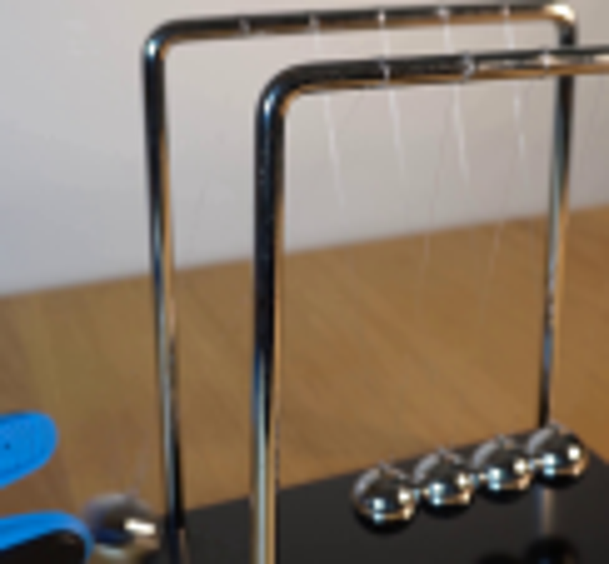
视觉工具实际返回图片 3
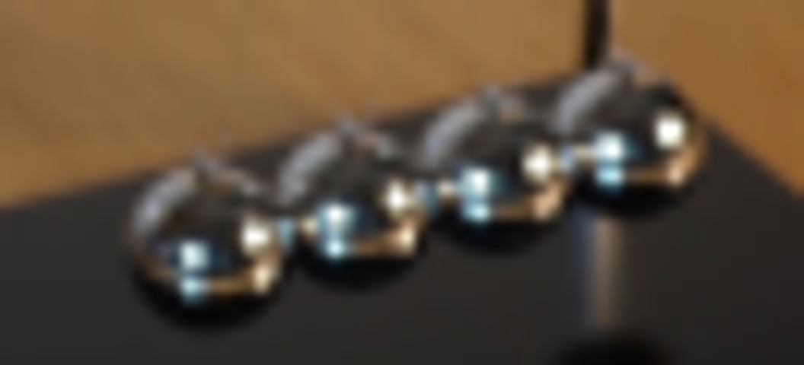
视觉工具实际返回图片 4
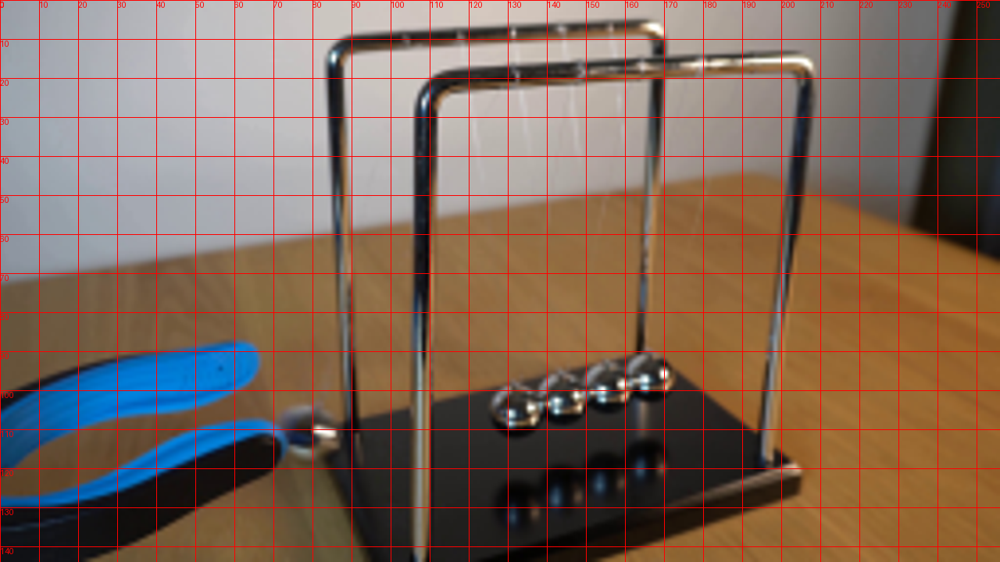
视觉工具实际返回图片 5
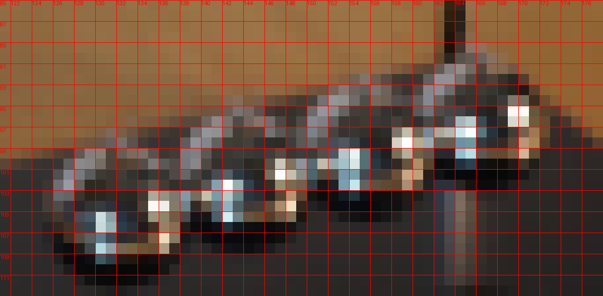
视觉工具实际返回图片 6
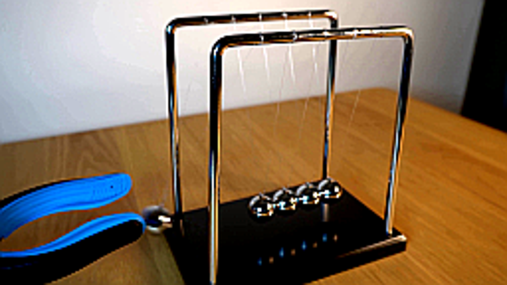
视觉工具实际返回图片 7
视觉工具实际返回图片 8

视觉工具实际返回图片 9
视觉工具实际返回图片 10
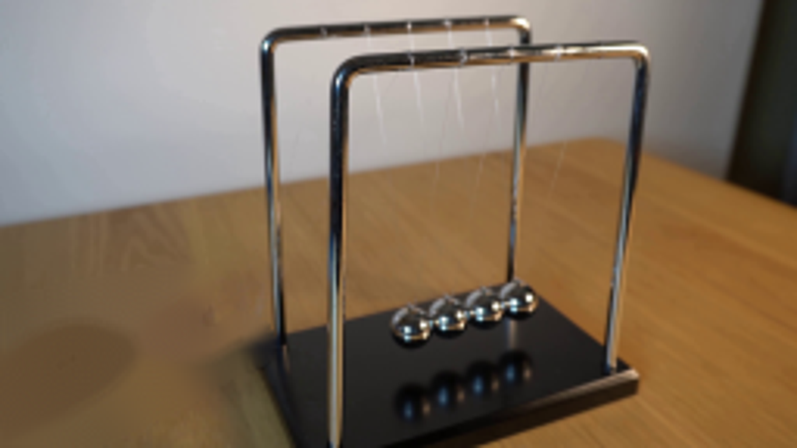
视觉工具实际返回图片 11
视觉工具实际返回图片 12
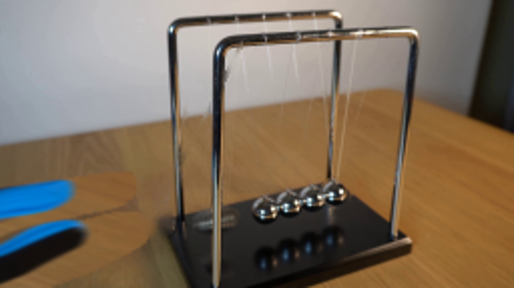
视觉工具实际返回图片 13
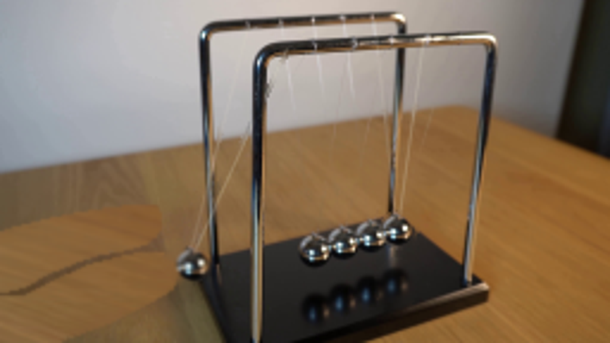
视觉工具实际返回图片 14
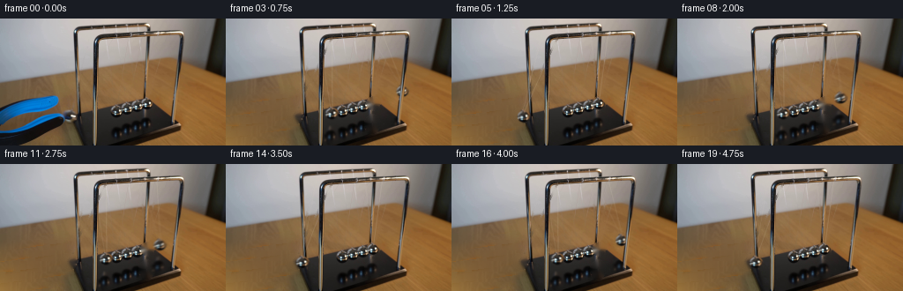
视觉工具实际返回图片 15
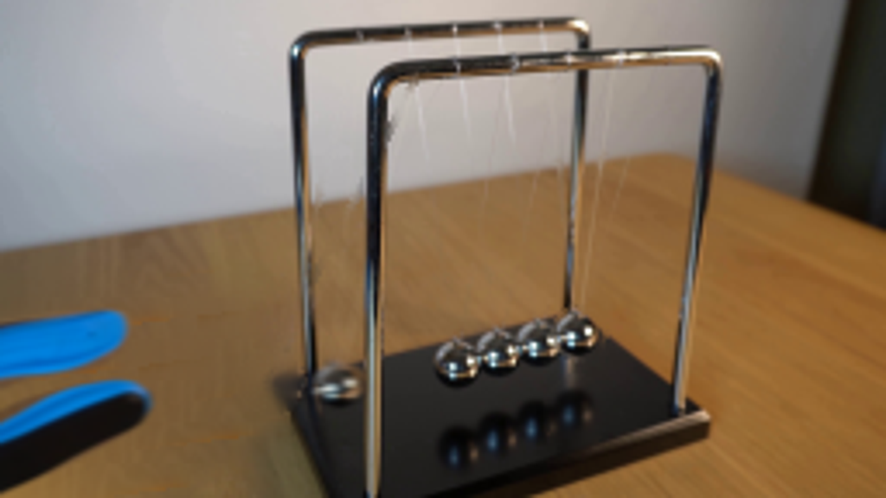
视觉工具实际返回图片 16
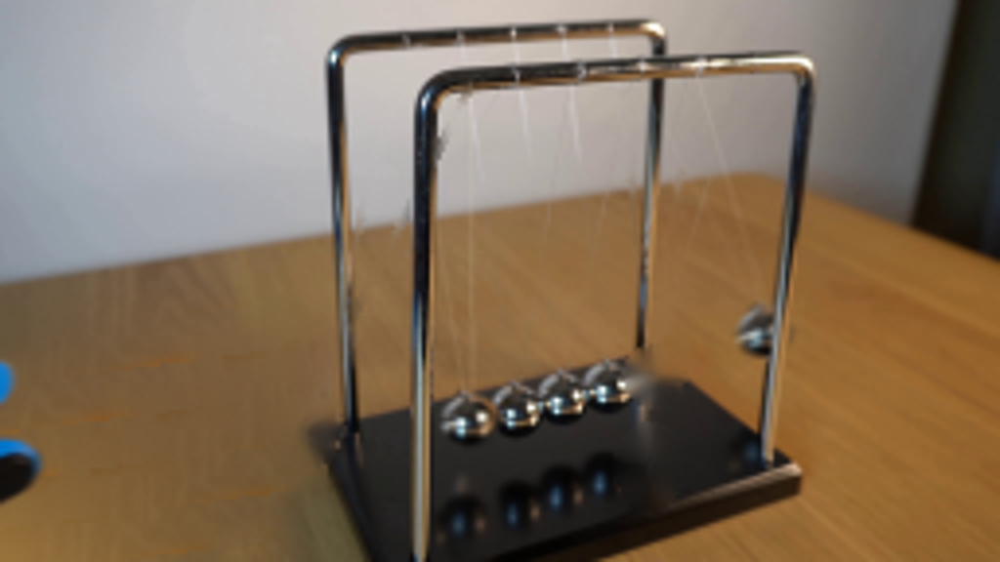
视觉工具实际返回图片 17
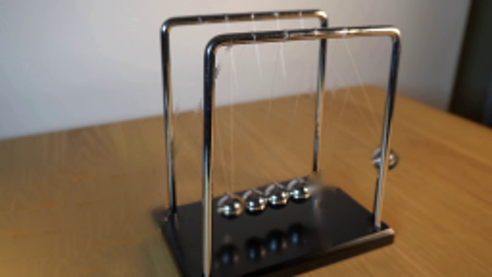
视觉工具实际返回图片 18
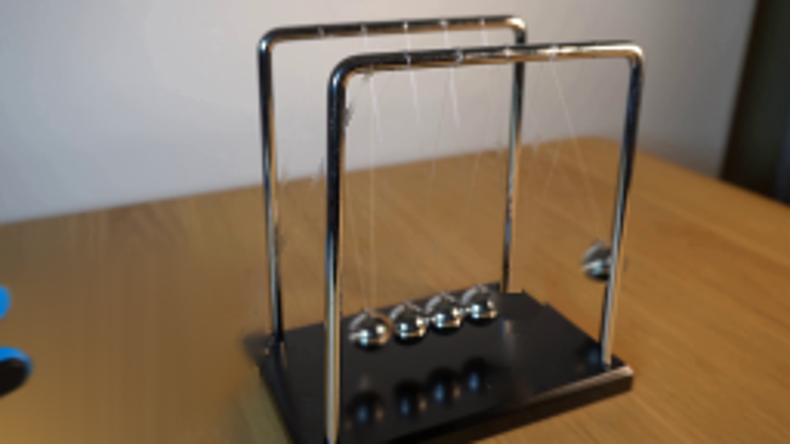
保存候选 4 份；完成命令 16 次；可验证图片返回 18 张。原始 API 响应与完整日志保留在本地。